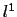

suivant: Pour normaliser les composantes
monter: Fonctions utiles pour les
précédent: Fonctions utiles pour les
Table des matières
Index
Les normes d'un vecteur : maxnorm l1norm l2norm norm
Les différentes instructions pour les normes d'un vecteur sont :
- maxnorm pour calculer la norme
 l d'un
vecteur : c'est le maximum des valeurs absolues de ses coordonnées.
l d'un
vecteur : c'est le maximum des valeurs absolues de ses coordonnées.
On tape :
maxnorm([3,-4,2])
Ou on tape :
maxnorm(vecteur(3,-4,2))
On obtient :
4
En effet : x=3, y=-4, z=2 et 4=max(|x|,|y|,|z|).
- l1norm pour calculer la norme
 d'un
vecteur : c'est la somme des valeurs absolues de ses coordonnées.
On tape :
l1norm([3,-4,2])
Ou on tape :
l1norm(vecteur(3,-4,2))
On obtient :
9
En effet : x=3, y=-4, z=2 et 9=|x|+|y|+|z|.
- norm ou l2norm pour calculer la norme
l2 d'un vecteur : c'est
la racine carrée de la somme des carrés de ses coordonnées.
On tape :
norm([3,-4,2])
Ou on tape :
norm(vecteur(3,-4,2))
On obtient :
sqrt(29)
En effet : x=3, y=-4, z=2 et
29 = | x|2 + | y|2 + | z|2.
suivant: Pour normaliser les composantes
monter: Fonctions utiles pour les
précédent: Fonctions utiles pour les
Table des matières
Index
Documentation de giac écrite par Renée De Graeve